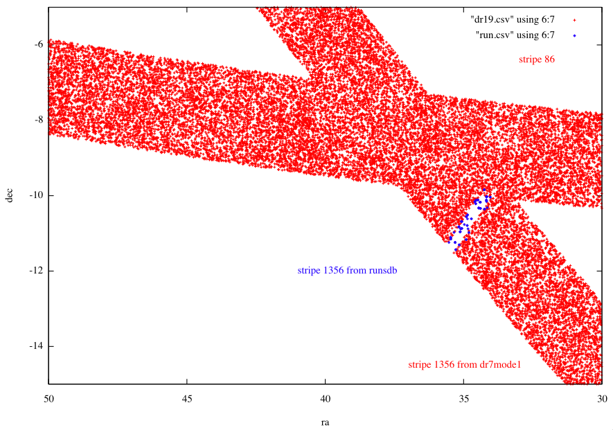
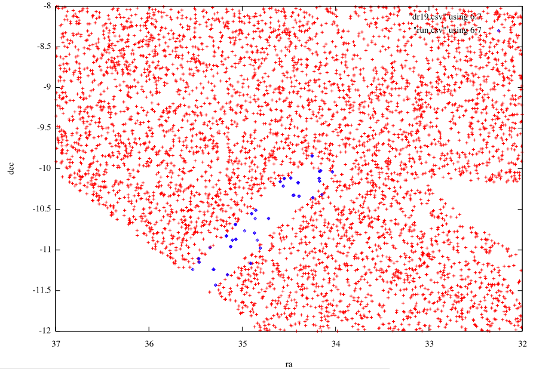

Select p.run,p.rerun,p.camcol,p.field,p.obj,p.ra,p.dec,g,mode,p.status,stripe,strip
From Photoobjall p,field f,segment s
Where
Ra between 50 and 30 and
Dec between -15 and -5 and
G between 18 and 18.2 and
p.fieldid = f.fieldid and f.segmentid = s.segmentid
(and mode=1 for the context dr7)
$11 == 1356 && $3 < 6 && ( ($1 == 6572 && $4 < 128 && $4 > 124) || ( $1 == 6591 && $4 < 142 && $4 > 139 ) || ( $1 == 7264 && $4 > 74 && $4 < 78 ) )
We can make a zoom to understand better what happen :
